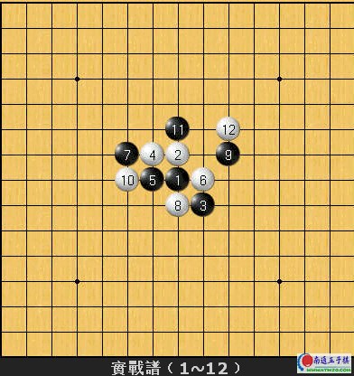
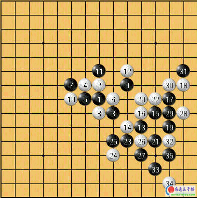

第一届台湾棋王赛
黑:张益丰五段
白:林巧盈初段

首先先给读者稍微介绍一下这两位棋手，张益丰槟壳拔蘼凼侨国排名或者是段位都是全台湾一等一的优秀棋手！曾代表台湾参加第一届亚洲夺得第二名的佳绩；林巧盈则跟我一样，是在第一届全国学生名人赛中晋段的棋手，正式比赛中我与她碰过两次，两次都是苦战，对我而言算是相当可怕的对手之一。
丘月开局，白4最强防守。进行至白12止，从盘面上来看似乎黑的棋路都被白棋给挡光光了。然而对真正的五子棋高手而言，往往在这种局面才能体现出一个棋手的真正实力U

黑13橄嗟逼逸的一手好棋！大幅度的扩展了黑右方的棋势。
稍微解释一下黑13楹问且徊胶闷宓脑因U
1q白在全局e并无任何立即有效的进攻手段，黑13时机正确；
2q黑13之后，右边生出了许多进攻的好点v比如K5、L7等等w，白防守困难。
白14只好防守，黑15整备理论上这个局部应该不容易直接取胜。白16我个人认槭潜揪值陌苷校黑17以下张老师开始痛下杀手，21整备之后白棋已成败势。
白16置於K8的话我想黑右边应该不太可能直接取胜。
从这盘棋当中我们不难看出，张益丰前辈的棋风虽然稳健，但该杀棋的时候却也毫不留情令人畏惧。